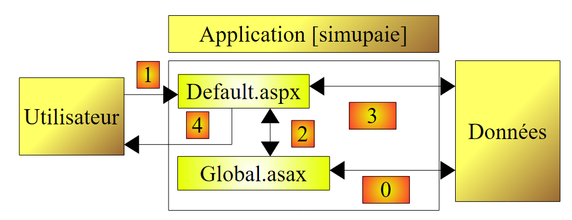
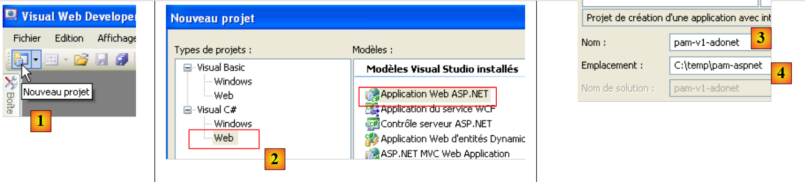
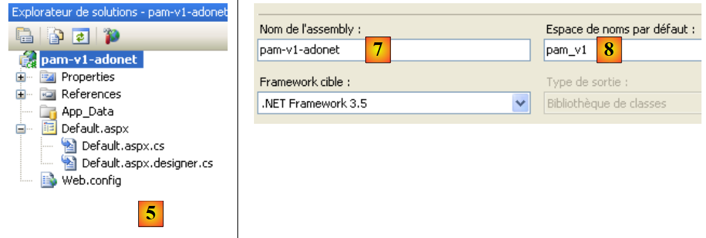
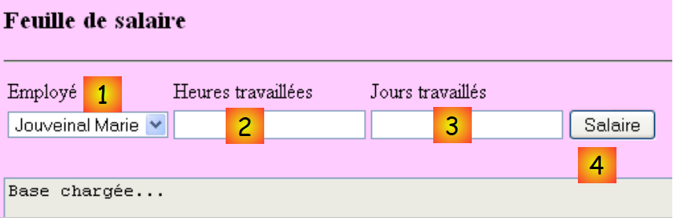
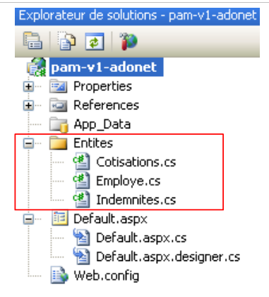

4. The [SimuPaie] application – version 1 – ASP.NET
4.1. Introduction
We want to write a .NET application that allows a user to simulate payroll calculations for child care providers at the "Maison de la petite enfance" association in a municipality.
The ASP.NET salary calculation form will look like this:

The ASP.NET application will have the following architecture:
 |
- When the first request is made to the application, an object of type [Global] derived from the [System.Web.HttpApplication] type is instantiated. This object will process the web application’s [web.config] configuration file and cache certain data from the database (operation 0 above).
- When the first request (operation 1) is made to the [Default.aspx] page, which is the application’s only page, the [Load] event is handled. This is where the employee combo box is populated. The data required for the combo box is retrieved from the [Global] object, which has cached it. This is operation 2 above. Operation 4 sends the initialized page to the user.
- When the request to calculate the salary (operation 1) is made to the [Default.aspx] page, the [Load] event is processed again. Nothing is done because this is a POST request, and the [Pam_Load] handler was written to do nothing in this case (using the IsPostBack boolean). Once the [Load] event is handled, the [Click] event on the [Salary] button is handled next. This event requires data that has not been cached in [Global]. Therefore, the event handler retrieves it from the database. This is operation 3 above. The salary is then calculated, and operation 4 sends the results to the user.
4.2. The Visual Web Developer 2008
 |
- In [1], create a new project
- in [2], of type [Web / ASP.NET Web Application]
- In [3], name the project
- in [4], specify its name and in [5] its location. A folder [c:\temp\pam-aspnet\pam-v1-adonet] will be created for the project.
 |
- In [5], the Visual Web Developer project
- In [6], the project properties (right-click on the project / Properties / Application).
- in [7], the name of the assembly that will be generated when the project is built
- in [8], the default namespace we want to use for the project's classes. The [_Default] class defined in the [Default.aspx.cs] and [Default.aspx.designer.cs] files was created in the [pam_v1_adonet] namespace, derived from the project name. You can change this namespace directly in the code of these two files:
[Default.aspx.cs]
using System;
....
namespace pam_v1
{
public partial class _Default : System.Web.UI.Page
{
[Default.aspx.designer.cs]
//------------------------------------------------------------------------------
// <auto-generated>
// This code was generated by a tool.
// Runtime version: 2.0.50727.3603
//
// Changes made to this file may cause incorrect behavior and will be lost if
// the code is regenerated.
// </auto-generated>
//------------------------------------------------------------------------------
namespace pam_v1 {
public partial class _Default {
.........
The markup for the [Default.aspx] file must also be modified:
 |
<%@ Page Language="C#" AutoEventWireup="true" CodeBehind="Default.aspx.cs" Inherits="pam_v1._Default" %>
...
The Inherits attribute above refers to the class defined in the [Default.aspx.cs] and [Default.aspx.designer.cs] files. The pam_v1 namespace is used there.
4.2.1. The [ Default.aspx] form
The visual appearance of the [ Default.aspx] form is as follows:
 |
The components are as follows:
No. | Type | Name | Role |
DropDownList | EmployeeComboBox | Contains the list of employee names | |
TextBox | TextBoxHours | Number of hours worked – actual number | |
TextBox | TextBoxDays | Number of days worked – integer | |
Button | ButtonSalary | Calculate salary | |
TextBox | Error TextBox | Information message for the user ReadOnly=true, TextMode=MultiLine | |
Label | LabelName | Name of the employee selected in (1) | |
Label | LabelFirstName | First name of the employee selected in (1) | |
Label | LabelAddress | Address | |
Label | LabelCity | City | |
Label | Postal Code | Zip code | |
Label | LabelIndex | Index | |
Label | LabelCSGRDS | CSGRDS Contribution Rate | |
Label | CSGD Label | CSGD contribution rate | |
Label | Retirement Label | Retirement Contribution Rate | |
Label | LabelSS | Social Security Contribution Rate | |
Label | LabelSH | Base hourly wage for the index indicated in (11) | |
Label | LabelEJ | Daily living allowance for the index indicated in (11) | |
Label | LabelRJ | Daily meal allowance for the index indicated in (11) | |
Label | LabelVacation | Paid leave allowance rate to be applied to the base salary | |
Label | LabelSB | Base salary amount | |
Label | LabelCS | Amount of social security contributions to be paid | |
Label | LabelIE | Amount of child care allowance | |
Label | LabelIR | Amount of meal allowances for the child in care | |
Label | LabelSN | Net salary to be paid to the employee |
The form also contains two [Panel] containers:
contains the (5) TextBoxError component | |
contains components (6) through (24) |
A [Panel] component can be made visible or hidden programmatically using its Boolean property [Panel].Visible.
4.2.2. Input validation
To calculate a salary, the user:
- selects an employee in [1]
- enters the number of hours worked in [2]. This number can be a decimal, such as 2.5 for 2 hours and 30 minutes.
- enters the number of days worked in [3]. This number is an integer.
- calculate the salary using the [4] button
 |
When the user enters incorrect data in [2] and [3], it is validated as soon as the user switches input fields. Thus, the screenshot below was taken before the user even clicked the [Salary] button:
 |
Two conditions are required for the behavior described above:
- the validation components must have their EnableClientScript property set to true:
 |
- The browser displaying the page must be able to execute the JavaScript code embedded in an HTML page.
If the client browser does not verify the validity of the data itself, the data will only be verified when the browser posts the form entries to the server. It is then the code on the server that processes the browser’s request that will verify the validity of the data. Note that this validation must always be performed, even if the page displayed in the client browser contains JavaScript code that performs the same validation. This is because the server cannot be certain that the POST request it receives actually comes from that page and that the data has therefore been validated.
The list of validators is as follows:
No. | Type | Name | Role |
RequiredFieldValidator | RequiredFieldValidatorHours | checks that the [2] [TextBoxHeures] field is not empty | |
RangeValidator | RangeValidatorHours | checks that the field [2] [TextBoxHours] is a real number in the range [0, 200] | |
RequiredFieldValidator | RequiredFieldValidatorDays | checks that field [3] [TextBoxDays] is not empty | |
RangeValidator | RangeValidatorDays | checks that the [3] [TextBoxDays] field is an integer in the range [0,31] |
Task: Build the [Default.aspx] page. First, place the two containers [PanelErrors] and [PanelSalary] so that you can then place the components they are supposed to contain.
4.2.3. Application Entities
 |
Once read, the rows from the [contributions], [employees], and [allowances] tables will be stored in objects of type [Contributions], [Employee], and [Allowances] defined as follows:
namespace Pam.Entities
{
public class Contributions
{
// automatic properties
public double CsgRds { get; set; }
public double Csgd { get; set; }
public double SocialSecurity { get; set; }
public double Retirement { get; set; }
// constructors
public Contributions()
{
}
public Contributions(double employerContrib, double employeeContrib, double socialSecurity, double pension)
{
CsgRds = csgRds;
Csgd = csgd;
Secu = secu;
Retirement = retirement;
}
// ToString
public override string ToString()
{
return string.Format("[{0},{1},{2},{3}]", CsgRds, Csgd, Secu, Retraite);
}
}
}
namespace Pam.Entities
{
public class Employee
{
// automatic properties
public string SS { get; set; }
public string LastName { get; set; }
public string LastName { get; set; }
public string Address { get; set; }
private string City { get; set; }
private string ZipCode { get; set; }
private int Index { get; set; }
// constructors
public Employee()
{
}
public Employee(string lastName, string firstName, string address, string zipCode, string city, int index)
{
SS = ss;
LastName = lastName;
FirstName = firstName;
Address = address;
ZipCode = zipCode;
City = city;
Index = index;
}
// ToString
public override string ToString()
{
return string.Format("[{0},{1},{2},{3},{4},{5},{6}]", SS, LastName, FirstName, Address, City, ZipCode, Index);
}
}
}
namespace Pam.Entities
{
public class Compensation
{
// automatic properties
public int Index { get; set; }
public double BaseHour { get; set; }
public double DailyMaintenance { get; set; }
public double DailyMeal { get; set; }
public double CPAllowances { get; set; }
// constructors
public Allowances()
{
}
public Indemnities(int index, double baseHour, double dailyMaintenance, double dailyMeal, double CPIndemnities)
{
Index = index;
BaseHour = baseHour;
DailyMaintenance = dailyMaintenance;
DailyMeal = dailyMeal;
CPAllowances = CPAllowances;
}
// identity
public override string ToString()
{
return string.Format("[{0}, {1}, {2}, {3}, {4}]", Index, BaseHour, DailyMaintenance, DailyMeal, CPAllowances);
}
}
}
4.2.4. Application Configuration
The [Web.config] file that configures the application will be as follows:
<?xml version="1.0" encoding="utf-8"?>
<configuration>
<configSections>
...
</configSections>
<connectionStrings>
<add name="dbpamSqlServer2005" connectionString="Data Source=.\SQLEXPRESS;AttachDbFilename=C:\data\...\dbpam.mdf;User Id=sa;Password=msde;Connect Timeout=30;" providerName="System.Data.SqlClient"/>
</connectionStrings>
<appSettings>
<add key="selectEmployee" value="select LAST_NAME, FIRST_NAME, ADDRESS, CITY, ZIP_CODE, ID from EMPLOYEES where SS=@SS"/>
<add key="selectEmployees" value="select FIRST_NAME, LAST_NAME, SS from EMPLOYEES"/>
<add key="selectContributions" value="select CSGRDS,CSGD,SECU,PENSION from CONTRIBUTIONS"/>
<add key="SelectIndemnities" value="select INDEX,HOURLYRATE,DAILYMAINTENANCE,DAILYMEAL,CPALLOWANCES from ALLOWANCES"/>
</appSettings>
<system.web>
<!--
Set `compilation debug="true"` to insert debug symbols
in the compiled page. Since this
affects performance, set this value to true only
during development.
-->
<compilation debug="false">
...
</configuration>
- line 9: defines the connection string to the SQL Server database
- lines 13–16: define SQL queries used by the application to avoid hard-coding them in the code.
- line 13: the SQL query is parameterized. The parameter notation is specific to SQL Server.
Task: Enter these parameters into the [Web.config] file. Line 9 will be adapted to the actual path of the database [dbpam.mdf].
4.2.5. Application Initialization
An ASP.NET application is initialized by the [Global.asax.cs] file. It is structured as follows:
 |
- In [1], add a new item to the project
- In [2], add the global application class, which is named [Global.asax] by default [3]
 |
- in [4], the [Global.asax] file and the associated class [Global.asax.cs]
- In [5], display the markup for [Global.asax]
<%@ Application Codebehind="Global.asax.cs" Inherits="pam_v1.Global" Language="C#" %>
The [pam_v1.Global] class is defined in the [Global.asax.cs] file. For our purposes, it will be defined as follows:
using System;
using System.Collections.Generic;
using System.Configuration;
using System.Data.SqlClient;
using Pam.Entities;
namespace pam_v1
{
public class Global : System.Web.HttpApplication
{
// --- application static data ---
public static Employee[] Employees;
public static Contributions Contributions;
public static Dictionary<int, Benefits> Benefits = new Dictionary<int, Benefits>();
public static string Msg = string.Empty;
public static bool Error = false;
public static string ConnectionString = null;
// Start the application
public void Application_Start(object sender, EventArgs e)
{
...
try
{
// connection
ConnectionString = ...
using (SqlConnection connection = new SqlConnection(ConnectionString))
{
connection.Open();
// retrieve the list of employees and store it in the static array [Employees]
...
// retrieve the contribution rates and store them in the static variable [Contributions]
...
// retrieve the allowances and store them in the static dictionary [Allowances]
...
// Success
Msg = "Database loaded...";
}
}
catch (Exception ex)
{
// log the error
Msg = string.Format("The following error occurred while accessing the database: {0}", ex);
Error = true;
}
}
}
}
- Line 20: The [Application_Start] method is executed when the web application starts. It is executed only once.
- lines 12–17: public and static fields of the class. A static field is shared by all instances of the class. Thus, if multiple instances of the [Global] class are created, they all share the same static field [Employees], accessible via the reference [Global.Employees], i.e., [ClassName].StaticField. [Global] is the name of a class. It is therefore a data type. This name is arbitrary. The class always derives from [System.Web.HttpApplication].
Let’s return to our [Global] class. One might wonder whether it is necessary to declare its fields as static. In fact, it appears that in some cases, there may be multiple instances of the [Global] class, which justifies making the fields that need to be shared by all these instances static.
There is another way to share "application" scope data between the different pages of a web application. Thus, the Employees array could be stored in the Application_Start procedure as follows:
Application.Add("employes",Employes);
By default, [Application] in any ASP.NET application is a reference to an instance of the class defined in [Global.asax.cs]. Application is a container capable of storing objects of any type. The Employees array could then be retrieved in the code of any page in the web application as follows:
Employees[] employees = Application.Get["employees"] as Employee[];
Because the Application container stores objects of any type, we retrieve an Object type that must then be cast. This method is always usable, but sharing data via typed static fields of the [Global] object avoids casting and allows the compiler to perform type checks that assist the developer. This is the method that will be used here.
The data shared by all users is as follows:
- line 12: the array of [Employee] objects that will store the simplified list (SSN, LAST_NAME, FIRST_NAME) of all employees
- line 13: the object of type [Contributions] that will store the contribution rates
- line 14: the dictionary that will store the allowances linked to the various employee indices. It will be indexed by the employee’s index, and its values will be of type [Allowances]
- line 15: a message indicating whether the initialization completed successfully or with an error
- line 16: a Boolean indicating whether the initialization ended with an error or not
- line 17: the database connection string.
Question: Complete the code for the [Application_Start] class.
4.3. Events of the [Default.aspx] form
4.3.1. The [P age_Load] procedure
When the [Default.aspx] form loads, it retrieves the employees' names from the [Global.Employees] array (line 12) and populates the drop-down list [1] with them:
 |
- The drop-down list [1] has been populated
- TextBox [5] indicates that the database was read correctly
If initialization errors occurred when the application started, TextBox [5] indicates this:

Question: Write the [Page_Load] procedure for the [Default.aspx] web page, which, when executed at application startup, ensures the behavior described above.
4.3.2. Salary calculation
Clicking button [4] triggers the handler:
protected void ButtonSalaire_Click(object sender, System.EventArgs e)
This handler begins by verifying the validity of the entries made in [2] and [3]. If either is incorrect, the error is reported as shown previously. Once the entries in [2] and [3] have been verified and found to be valid, the application must display additional data about the user selected in [1] as well as their salary (see screenshot in section 4.1).
Question: Write the code for the [ButtonSalaire_Click] procedure.